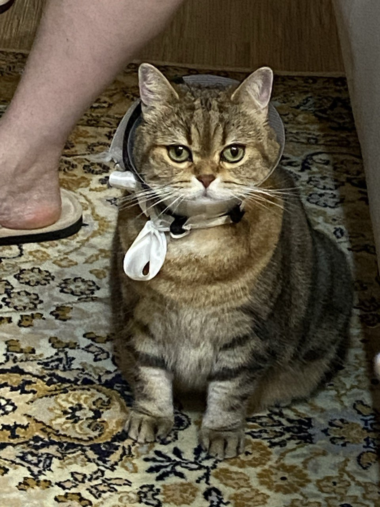
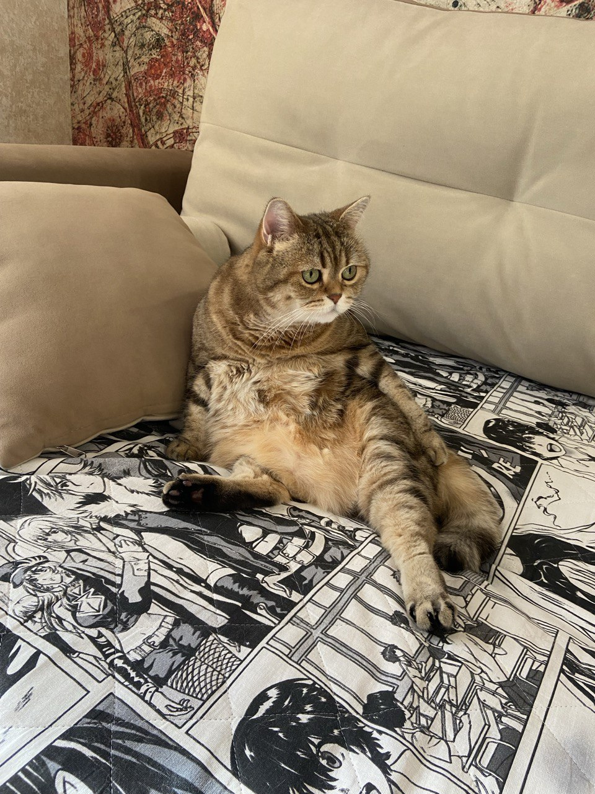
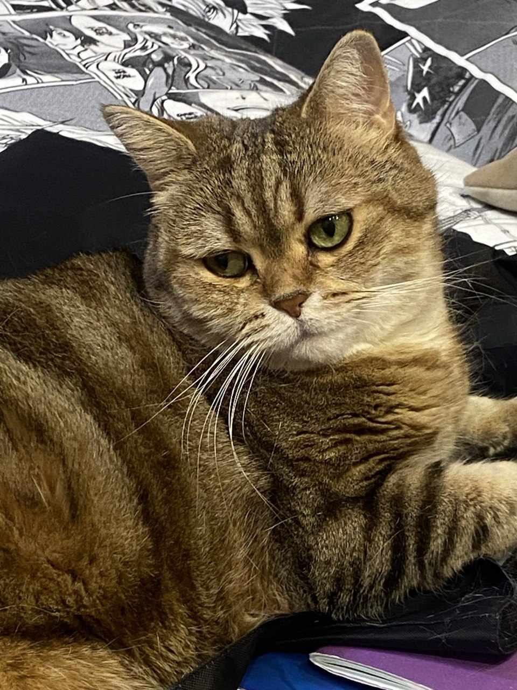
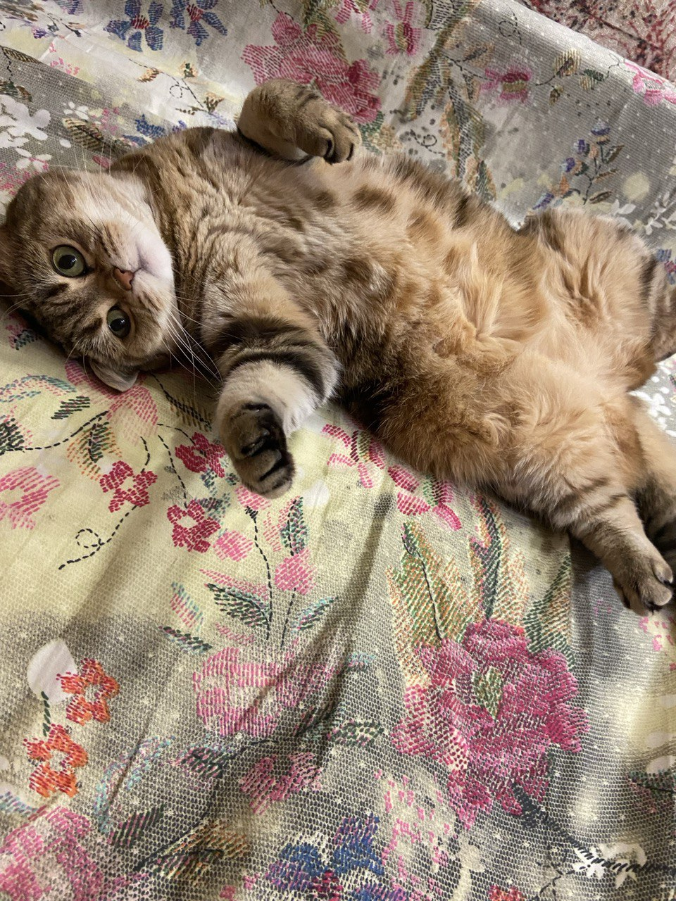
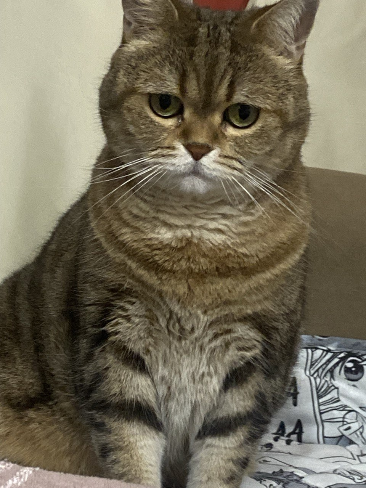
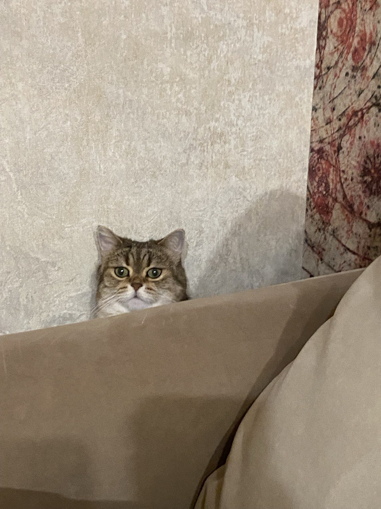

Тачик Виктория
Студентка факультета компьютерных наук
Ниже представлено то, что делает мою жизнь значительн лучше
Это моя кошка Буся, порода Шотландская. Ей 11 лет и она, также как и я, очень любит спать.
  
Мои любимые цветы
Скорее всего самыми красивыми цветами я считаю пионы. Но помимо них есть и множество других, например:архидея, гортензия, эустома и др.
Кем я хотела стать?
Судмедэксперт
Да, это действительно так. До 9 класса я болше всего хотела стать высококлассным специалистом в области медицины, но в конце концов выбрала направление IT
(благодаря чему в 3 часа ночи создаю сайт, а не учу анатомию).